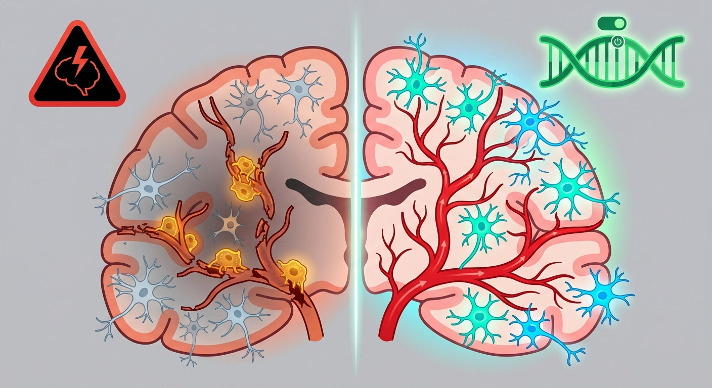

The Zombie Roadblocks of the Brain: How a Single Genetic Switch Rejuvenates Stroke-Damaged Blood Vessels

When an ischemic stroke strikes, the brain becomes a disaster zone. A blood clot cuts off vital oxygen, and within minutes, millions of neurons begin to die. But the true, long-term tragedy of a stroke isn't just the initial impact—it is the brain’s subsequent failure to rebuild its broken plumbing. For years, scientists have wondered why the brain’s blood vessels, which should rush to repair the damage, often seem to freeze, leaving devastated tissue permanently cut off from life-giving blood flow.
Now, a groundbreaking study published in Functional & Integrative Genomics has mapped this cellular gridlock at unprecedented resolution. The culprit? A specialized crew of cellular "zombies" that hijack the brain's recovery efforts. By identifying the genetic master-switches driving this process, researchers have unlocked a potential new therapy that doesn’t just halt the aging of brain vasculature, but actually coaxes it back to life.
The Maintenance Crew That Refused to Work
To understand the discovery, imagine the brain’s blood vessels as a vast, bustling highway system. The roadwork is managed by endothelial cells, which line the inner walls of these vessels. In a young, healthy brain, these cells are highly dynamic—constantly repairing tears, migrating to damaged areas, and budding off to form new vessels (a process called vasculogenesis) whenever injury occurs.
But as we age, or under the extreme stress of a stroke, these industrious cells can enter a state known as cellular senescence. They don't die. Instead, they become "zombie cells"—permanently arrested, unable to divide or repair, yet chemically active. They sit on the vascular highway, spewing a toxic cocktail of inflammatory signals that damage surrounding tissues and prevent neighboring cells from doing their jobs.
Until now, scientists lacked a precise map of this senescent landscape in the brain. They knew these zombie cells existed, but they didn’t know exactly which genes were pulling the strings during a stroke.
Mapping the Post-Stroke Landscape
The research team solved this by combining two powerful genomic technologies: single-cell RNA sequencing (scRNA-seq) and bulk RNA sequencing. If bulk sequencing is like looking at a satellite photo of a forest to see which areas are turning brown, single-cell sequencing is like walking up to individual trees and analyzing their leaves. This allowed the researchers to isolate endothelial cells from the chaotic cellular milieu of a stroke-damaged brain and read their active genetic scripts.
Their analysis pointed to a distinct signature of four key genes driving this cellular decay: Arhgap31, Tm4sf1, Itm2a, and Vwa1. These genes were hyperactive in senescent endothelial cells, acting like genetic emergency brakes that locked the cells into their toxic, retired state.
Waking Up the Zombies
The most thrilling part of the study came when researchers moved from mapping to manipulation. They focused heavily on Arhgap31, a gene known for regulating cell shape and movement, but never before fully appreciated as a therapeutic target in stroke recovery.
Using in vitro models of senescent endothelial cells, the team genetically knocked down—or turned off—the Arhgap31 gene. The results were nothing short of remarkable. By silencing this single genetic switch, they successfully:
- Reversed Senescence: The cells shed their zombie-like state and stopped releasing inflammatory signals.
- Restored Mobility: The treated cells regained their ability to migrate toward damaged areas.
- Rebuilt Blood Vessels: Most importantly, the cells resumed vasculogenesis, sprouting new, healthy vessel networks.
By removing the genetic brake, the researchers had effectively forced these retired, toxic cells to roll up their sleeves and get back to work building the brain's vascular infrastructure.
A New Era of Precision Senotherapeutics
For the longevity and biotechnology sectors, this discovery represents a profound paradigm shift. Historically, the field of "senolytics" has focused on a scorched-earth policy: developing drugs that selectively kill zombie cells. While promising, this approach can be risky in delicate tissues like the brain, where losing too many endothelial cells could compromise the blood-brain barrier.
This new research paves the way for senomorphics—therapies that don’t kill senescent cells, but instead reprogram them. By targeting Arhgap31, clinicians could theoretically rejuvenate a stroke patient’s existing vascular network, accelerating tissue repair and mitigating long-term cognitive decline.
To accelerate this transition from bench to bedside, the researchers ran their genetic signature through the Connectivity Map (CMap)—a massive database of drug-induced gene expression profiles. They identified several existing small-molecule compounds that produce the exact opposite genetic footprint of the stroke-associated signature, effectively presenting a pre-screened shortlist of drug candidates ready for pharmacological testing.
As longevity medicine shifts from generalized life-extension to targeted organ rejuvenation, the ability to rebuild the brain’s vascular highway after a crisis like a stroke could be the key to ensuring that longer lives are also healthier, more vibrant ones.
Sources & Citations:
Primary Source: Decoding the senescent endothelial landscape in ischemic stroke through single-cell and bulk RNA sequencing. (Functional & integrative genomics)
- Wang, X., et al. (2026). Decoding the senescent endothelial landscape in ischemic stroke through single-cell and bulk RNA sequencing. Functional & Integrative Genomics. https://doi.org/10.1007/s10142-026-02018-4